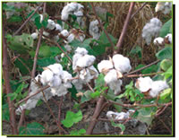

COTTON :: MAJOR DISEASE :: ROOT ROT
Root rot - Rhizoctonia solani
Symptoms
The pathogen causes three types of symptoms viz., seedling disease, sore-shin and root rot. Germinating seedlings and seedlings of one to two weeks old are attacked by the fungus at the hypocotyl and cause black lesions, girdling of stem and death of the seedling, causing large gaps in the field. In sore-shin stage (4 to 6 weeks old plants), dark reddish-brown cankers are formed on the stems near the soil surface, later turning dark black and plant breaks at the collar region leading to drying of the leaves and subsequently the entire plant.
|  |
|---|
| Rhizoctonia solani - Symptoms 1 |
Typical root rot symptom appears normally at the time of maturity of the plants. The most prominent symptom is sudden and complete wilting of plants in patches. Initially, all the leaves droop suddenly and die with in a day or two. The affected plants when pulled reveal the rotting of entire root system except tap root and few laterals. The bark of the affected plant shreds and even extends above ground level. In badly affected plants the woody portions may become black and brittle. A large number of dark brown sclerotia are seen on the wood or on the shredded bark.
Pathogen
The fungal hyphae are septate and fairly thick and produce black, irregular sclerotia which measure 100 m in diameter.
Favourable conditions
- Dry weather following heavy rains,
- High soil temperature (35-39˚C),
- Cultivation of favourable hosts like vegetables,
- Oil seeds and legumes preceding cotton
- Wounds caused by ash weevil grubs and nematodes.
{kind=link}
Disease cycle
The disease is mainly soil-borne and the pathogen can survive in the soil as sclerotia for several years. The spread is through sclerotia which are disseminated by irrigation water, implements, and other cultural operations.
Management
- Treat the seeds with Trichoderma viride@ 4g/kg of seed.
- Spot drench with 0.1% Carbendazim.
- Apply farm yard manure at 10t/ha or neem cake at 150 Kg/ha.
- Adjust the sowing time, early sowing (First Week of April) or late sowing (Last week of June) so that crop escapes the high soil temperature conditions.
- Adopt intercropping with sorghum or moth bean (Phaseolus aconitifolius)to lower the soil temperature.